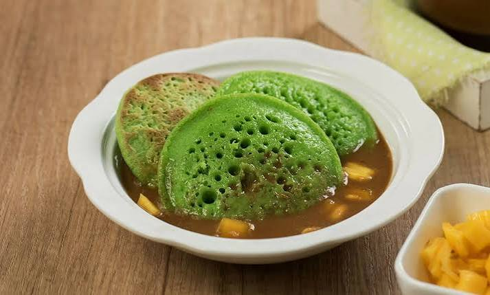

AWAL YANG HANGAT
Pilihan makanan yang disajikan untuk menemani pagi dengan rasa yang nikmat.
Setiap pagi punya cerita dan rasa tersendiri. Nikmati pilihan sarapan sederhana dengan cita rasa yang hangat untuk menemani langkahmu memulai hari.

Ruang pagi hadir sebagai tempat menikmati bebagai pilihan sarapan. Mulai dari makanan berkuah, hidangan hangat, hingga menu sederhana yang cocok menemani mu di awal hari.
Setiap hidangan punya cita rasa tersendiri. Kami percaya sarapan bukan hanya tentang mengisi perut, tetapi juga tentang menikmati waktu sebelum memulai kesibukan.
Kenali Rahasianya ↗Pilihan makanan yang disajikan untuk menemani pagi dengan rasa yang nikmat.
Tersedia bebagi menu sarapan dengan rasa dan ciri khas masing-masing.
Cocok dinikmati bersama keluarga, teman, atau sebagai teman sebelum beraktivitas.
Setiap hidangan punya rasa dan keistimewaan sendiri. Temukan pilihan sarapan favoritmu.

Nasi gurih dengan santan dan rempah pilihan, disajikan dengan lauk dan pelengkap yang menggugah selera.

Lontong lembut dengan kuah santan berbumbu, sayuran, dan pelengkap khas yang kaya rasa.

Kue tradisional berbahan tepung beras dan santan, dimasak hingga matang dengan tekstur lembut dan aroma khas.
Setiap hidangan punya keistimewaan tersendiri. Perpaduan bahan pilihan, racikan bumbu, dan cara penyajian menghadirkan rasa yang membuat sarapan terasa lebih istimewa.
Menggunakan bahan yang dipilih untuk menghasilkan hidangan yang nikmat.
Perpaduan bumbu yang memberikan cita rasa khas pada setiap sajian.
Menghadirkan perpaduan rasa gurih, manis, dan nikmnat di setiap hidangan.
Setiap sajian dihadirkan untuk menemani awal harimu.
Kulit tipis beisi isian gurih yang dibalut tepung panir hingga renyah.

Kue bertekstur lembut dengan isian vla yang manis dan creamy.

Kulit pandan lembut dengan isian kelapa parut dan gula merah yang manis.
Setiap pagi punya kesempatan untuk dimulai dengan sesuatu yang menyenangkan Temukan sarapan favoritmu, nikmati setiap sajian, dan biarkan rasa sederhana menemani awal harimu.
Temukan favorit ↗